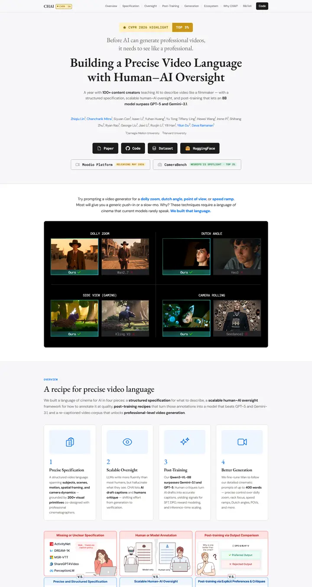

Building a Precise Video Language with Human-AI Oversight
冷たい色の紙に刷られた映画祭のプログラム。Garamond の見出し、タイプライター風のタグ、タイトルのすぐ先には黒い上映室。

表示されたページと照合済みです。
選んだ理由
候補の中で最も意図的に作られたページです。セリフ体のディスプレイ見出しがモノスペースのバッジ列の上に置かれ、文章は短く、Ours とベースラインを並べた暗い比較グリッドが最初の画面にしっかりした見せ場を作っています。番号付きの概要カードとイラスト入りの problem/solution の帯が、最後までリズムを保っています。
以下の説明と DESIGN.md 本文は英語です。コーディングエージェントが同じ一つの版を読めるよう、翻訳していません。
概要
カラーパレット
タイポグラフィ
EB Garamond
Building a Precise Video Language with Human-AI Oversight
Abstract · Method · Results · BibTeX — 0123456789
DM Sans
Building a Precise Video Language with Human-AI Oversight
Abstract · Method · Results · BibTeX — 0123456789
Roboto Mono
Building a Precise Video Language with Human-AI Oversight
Abstract · Method · Results · BibTeX — 0123456789
余白と形
ページの構成要素
ガイドライン
似たスタイル

CRAFT: Training-Free Cascaded Retrieval for Tabular QA
淡い青焼きブルーの整った製品マニュアル。どの段階もそれぞれの色の縁をまとっている。

Efficient Self-Evaluation for Diffusion Language Models via Sequence Regeneration
青、すみれ、アプリコットの夜明け色に染まった角丸カードの整った積み重ね。署名はグラデーションのワードマーク。

FIGMA: Towards FIne-Grained Music retrievAl
温かみのある紙に刷った音楽誌。赤いキッカーの下に重厚な Newsreader の見出し、結果を示す大きな赤いセリフ数字、柔らかなクリーム色の枠に収まった図。

GuideDog: A Real-World Egocentric Multimodal Dataset for Blind and Low-Vision Accessibility-Aware Guidance
静かな学術書の一頁。セリフ体の一段組み、リンクには牛血色のインク、自分の行だけをほんのり染める表。

LaMI: Augmenting Large Language Models via Late Multi-Image Fusion
丁寧に作られた学会配布資料。Noto Serif の見出し、ネイビーの枠線ボタン、交互に現れる柔らかなグレーの帯。

PairCoder++: Pair Programming as a Universal Paradigm for Verified Code-Driven Multimodal and Structured-Artifact Generation
すっきりとした白い製品ページ。青いお知らせの帯、墨のように黒いピル型ボタン、柔らかな影のカードに載ったすべての図。